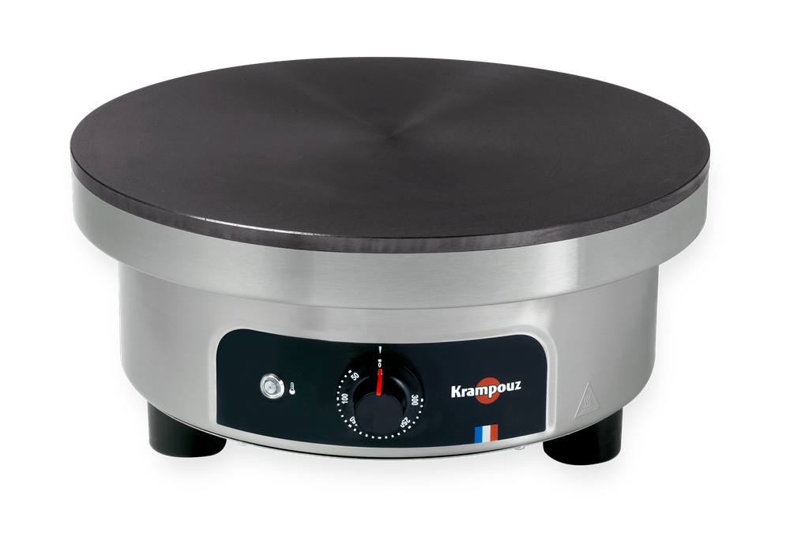
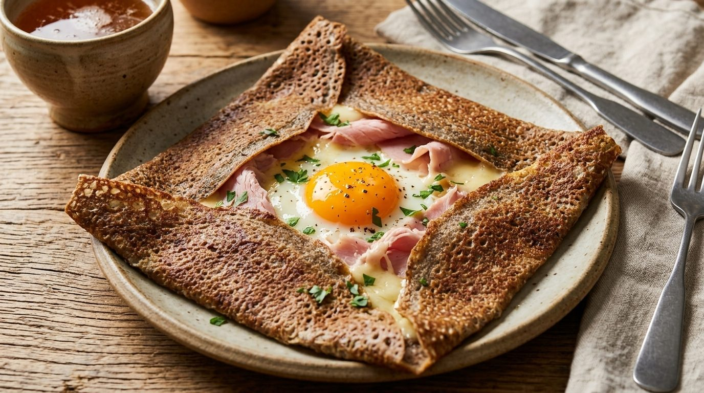
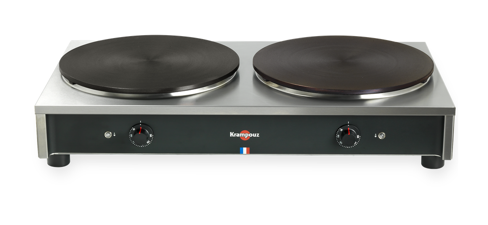
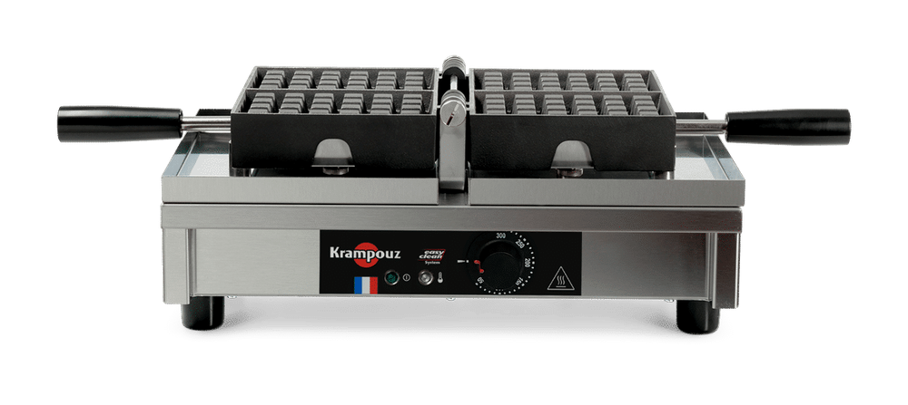
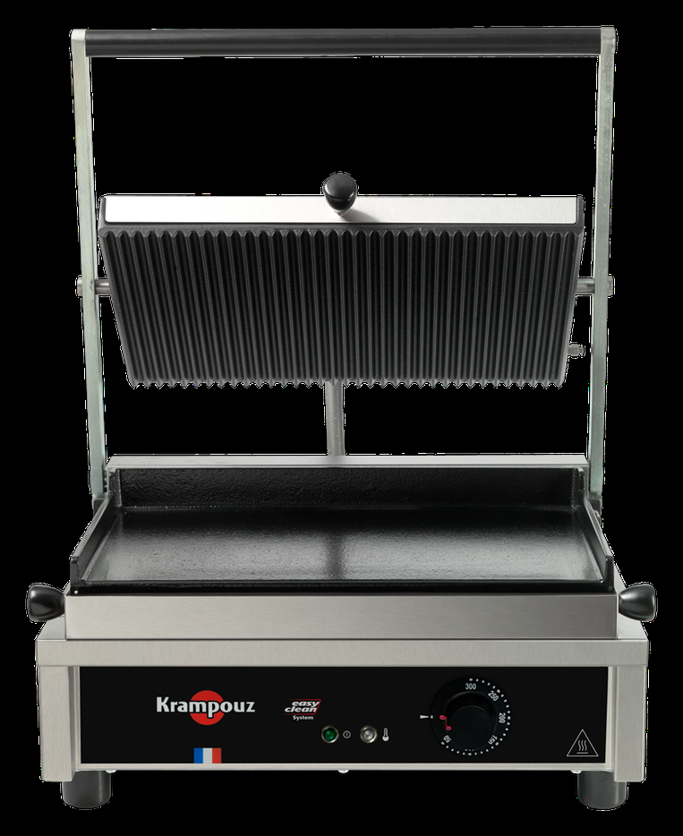

Crêpière Ø 40 cm
La plaque des crêperies, sur une prise classique.
- MarqueKrampouz
- Alimentation220 V · 3 000 W
- PlaqueØ 40 cm · fonte
- Débit≈ 60 crêpes / heure
- Parc3 appareils
Week-end 50 €
dès35 €/ jour
Location de crêpière à Tours — Ballan-Miré & Touraine
Vos événements ont du goût.
Anniversaire, cousinade, Chandeleur ou kermesse : plutôt que d'acheter une machine à 1 000 €, louez la crêpière que les crêperies utilisent en plein service. Trois Ø 40 cm, une double, un gaufrier Bruxelles et un grill panini, à la journée ou le week-end, à dix minutes de Tours.

01 — Le parc
Du matériel Krampouz, électrique, sans installation. Chaque fiche donne la marque, l'alimentation, la capacité, les tarifs et les conditions. Trois crêpières Ø 40 cm, une double 2 × 35 cm, un gaufrier Bruxelles et un grill panini, remis en état entre chaque location.

La plaque des crêperies, sur une prise classique.
Week-end 50 €

Deux plaques, un seul appareil à brancher.
Week-end 60 €

Le sucré, en fournées de vingt-quatre.
Week-end 70 €

Le salé des buffets et des soirées.
Week-end 50 €
Conditions communes : retrait et retour sur rendez-vous à Ballan-Miré, à dix minutes de Tours ; matériel nettoyé et vérifié, mise en route expliquée au retrait, caution indiquée sur le devis, facture systématique. Livraison en urgence réservée aux crêperies : 70 € à Tours et dans l'agglomération, sous réserve de disponibilité.
02 — Tarifs
À la journée ou le week-end, par appareil, matériel nettoyé et vérifié, facture officielle. Le parc complet et les formules sur plusieurs appareils sont chiffrés au devis.
3 000 W · 3 unités
1 unité · débit doublé
1 800 W · 1 unité
2 600 W · 1 unité
Selon la durée et la période
Tarifs TTC, caution indiquée sur le devis. Professionnels : − 10 % dès 2 jours sur la location.
La crêpière pour le service, le gaufrier pour le goûter et le buffet : le duo le plus demandé pour les après-midi de fête.
110 €/ week-end
au lieu de 120 €
Réserver cette offreLes crêpes et les galettes d'un côté, les paninis de l'autre : de quoi tenir un dîner sans faire la queue.
85 €/ week-end
au lieu de 100 €
Réserver cette offreLes trois appareils pour une grande tablée : le sucré, le salé et le goûter, sans rien louer à côté.
145 €/ week-end
au lieu de 170 €
Réserver cette offreOffres combinées valables sur un week-end, tarifs indicatifs confirmés sur le devis. Toutes les locations se retirent et se rendent sur rendez-vous à Ballan-Miré ; la livraison en urgence à 70 € est réservée aux crêperies, à Tours et dans l'agglomération.
Base de calcul : deux à trois crêpes par convive, environ 60 crêpes à l'heure et par appareil.
Un doute sur la quantité ? Indiquez le nombre de convives dans le formulaire : on cale le matériel dessus.
Matériel vérifié et nettoyé, mise en route expliquée au retrait, facture officielle.
Une prise 220 V classique et une table stable. Plusieurs appareils en même temps : vérifiez la puissance et répartissez-les sur des circuits différents.
Crêperies et restaurants : appareil de remplacement livré en 2 h à Tours et dans l'agglomération, dès 70 €. Voir l'offre professionnelle.
Professionnels
Dépannage en 2 h à Tours et dans l'agglomération dès 70 €, et − 10 % sur la location dès 2 jours.
03 — Les occasions
Une crêpière professionnelle coûte près de 1 000 € et dort onze mois sur douze. Le temps d'un week-end, elle fait exactement ce qu'on lui demande : des crêpes, encore des crêpes, et de bons souvenirs. C'est l'idée d'une crêpe party réussie : on loue une machine à crêpes pour la soirée, on rend l'appareil le lundi, et l'on garde les photos.
« Vos invités s'en souviendront. »
Soixante à deux cents crêpes sur l'après-midi, la pâte qui s'étale, les enfants autour de la plaque : la crêpière devient le centre de la fête.
« Le pic de février. »
Deux dates où tout le monde veut des crêpes le même soir : réservez tôt, le parc part vite entre la fin janvier et le mercredi des Cendres.
« Sucré et salé, sans queue à la cuisine. »
Crêpière pour les galettes, gaufrier pour le goûter, grill panini pour le salé : selon l'heure, un seul appareil suffit souvent. On vous aide à choisir au moment de la réservation, sans vous vendre trois machines.
Les pics se remplissent 4 à 6 semaines à l'avance : Chandeleur, fêtes d'école de juin, septembre et décembre.
04 — Le déroulé
Un message via le formulaire ou WhatsApp avec vos dates et le nombre de convives.
Disponibilité et devis sous 24 h, réservation validée avec un acompte.
Sur rendez-vous au 4 clos de la Mignardière, à Ballan-Miré, à 10 min de Tours. On branche, on règle et on vous montre.
Matériel essuyé et rendu à la date convenue. Caution restituée le jour même.
05 — Le calendrier
L'activité événementielle du 37 se concentre sur deux fenêtres : le printemps des kermesses et l'automne des mariages et marchés de Noël. Sur ces mois, le parc part vite.
Chandeleur (2 février), fêtes des écoles (juin), forums associatifs (septembre) et marchés de Noël (décembre) sont les pics les plus demandés.
06 — La zone
Retrait sur rendez-vous au 4 clos de la Mignardière, à Ballan-Miré — rocade à deux minutes, lac des Bretonnières et espace Malraux juste à côté, dix minutes du centre de Tours. La location de crêpière couvre Tours, son agglomération et le reste de l'Indre-et-Loire (37). Traiteurs, restaurants et crêperies : le dépannage en 2 h et les tarifs pro sont sur la page professionnels.
Hors de cette zone ? Écrivez quand même : on étudie chaque demande.
07 — Questions fréquentes
Envoyez vos dates via le formulaire ou WhatsApp. On confirme la disponibilité et on vous envoie un devis sous 24 h. La réservation est validée par un acompte ; le solde est réglé au retrait (espèces, chèque ou virement). Facture officielle systématique.
Oui, une caution est demandée au retrait du matériel et restituée au retour. Le montant est indiqué sur le devis et dépend des appareils loués. Elle couvre les dommages éventuels, hors usure normale.
Non : tous nos appareils fonctionnent sur une prise 220 V classique. Attention en revanche à la puissance — 3 000 W pour une crêpière, 2 600 W pour le grill panini, 1 800 W pour le gaufrier. Pour plusieurs appareils en même temps, répartissez-les sur des circuits différents et évitez les multiprises.
Un nettoyage simple suffit : plaque essuyée une fois tiède, corps de l'appareil propre. Les produits ne sont pas fournis. Un retour nécessitant une remise en état est facturé 20 €, indiqués au devis.
Comptez environ 60 crêpes à l'heure sur une crêpière simple, et le double sur une double. Sur une soirée entière, deux appareils suffisent pour 200 convives ; pour un service de deux heures, comptez-en trois.
De 35 € la journée pour une crêpière Ø 40 cm, 40 € pour la double, 50 € et 60 € le week-end. Le gaufrier est à 45 € la journée (70 € le week-end), le grill panini à 35 € (50 €). Les offres combinées descendent à 110 € le week-end pour crêpière et gaufrier. Tarifs TTC, facture incluse, caution indiquée sur le devis.
Une crêpière Ø 40 cm suffit : environ 60 crêpes à l'heure, pour deux à trois crêpes par convive. Au-delà de soixante convives, prenez la crêpière double ou deux appareils. Le tableau « Combien d'appareils pour votre tablée ? » donne les correspondances, juste au-dessus.
Oui. La formule journée couvre 24 heures : retrait la veille, retour le lendemain, le temps de monter, de servir et de nettoyer tranquillement. La formule week-end couvre le samedi et le dimanche.
Appelez le 06 81 02 70 02. Le matériel est vérifié avant chaque départ, mais un incident reste possible : on vous dépanne à distance et, si besoin, on échange l'appareil à Ballan-Miré. Les crêperies ont droit au dépannage sur place en 2 h, dès 70 € — détail sur la page professionnels.
Le retrait se fait sur rendez-vous au 4 clos de la Mignardière, à Ballan-Miré — rocade et lac des Bretonnières à deux pas, dix minutes de Tours : les appareils tiennent dans un coffre. Les crêperies, traiteurs et restaurants peuvent demander une livraison — dépannage en 2 h dès 70 €, détail sur la page professionnels.
Oui, sans frais jusqu'à 7 jours avant la date de retrait. En deçà, l'acompte est conservé, sauf imprévu majeur : dans ce cas, parlez-nous-en, on trouve toujours une solution (report de date notamment).
Le matériel loué reste sous votre garde pendant la location : vous êtes responsable de son état, d'où la caution. Chaque appareil est vérifié et nettoyé avant son départ.
08 — Réservation
Remplissez le formulaire : votre demande part directement par e-mail, avec une estimation. Réponse sous 24 h, du lundi au samedi. Le parc complet est chiffré dans la réponse.